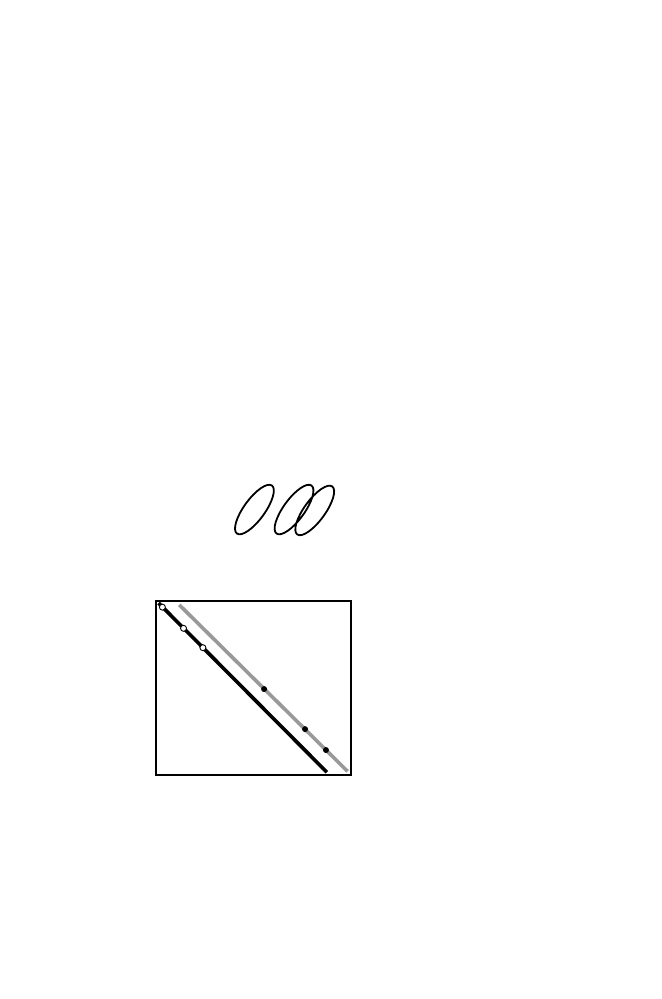

178
7 Rapid Alignment Methods:
FASTA
and
BLAST
chapter). Diagonal
d
l
is the one having
k
-tuple matches at positions
i
in
string I and
j
in string J such that
i
−
j
=
l
. As described earlier in this
chapter,
l
=
i
−
j
is called the
offset
. Offsets are explained pictorially in
Fig. 7.2. Alignments are extended by joining offset diagonals if the result
is an extended aligned region having a higher alignment score, taking into
account appropriate joining (gap) penalties.
Step 5 is to perform a rigorous Smith-Waterman local alignment. This
can be restricted to a comparatively narrow window extending +
w
to the
right and
−
w
to the left of the positions included within the highest-scoring
diagonal (see Fig. 7.3D).
7.4
BLAST
The most used database search programs are
BLAST
and its descendants.
BLAST
is modestly named for
B
asic
L
ocal
A
lignment
S
earch
T
ool, and it
was introduced in 1990 (Altschul et al., 1990). Whereas
FASTA
speeds up
the search by filtering the
k
-word matches,
BLAST
employs a quite different
L A I F L W R T W S
L
A
I
S
W
K
T
W
T
.
.
.
.
.
.
L A I F L W R T W S
L A I S W K T W T
I:
J:
j=1, i=1, i-j=0
j=2, i=2, i-j=0
j=3, i=3, i-j=0
j=5, 6=1, i-j=1
j=7, i=8, i-j=1
j=8, i=9, i-j=1
1 2 3 4 5 6 7 8 9 10
d
0
d
1
Fig. 7.2.
Illustration of offset diagonals. The first three letters for the alignment
between I and J as drawn have no offset. Corresponding diagonal
d
0
is drawn in
black. Farther down I and J, there are additional matches that are offset from each
other (residues enclosed by ellipses). These define another diagonal,
d
1
, that is offset
from the first one (grey line). Such offsets may indicate indels, suggesting that the
local alignments represented by the two diagonals should be joined to form a longer
alignment.